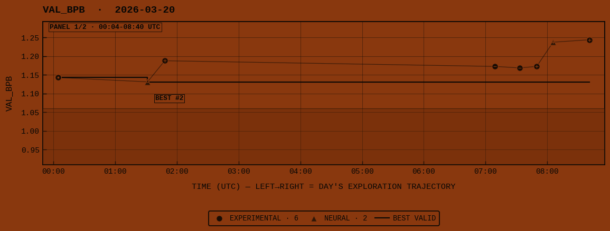
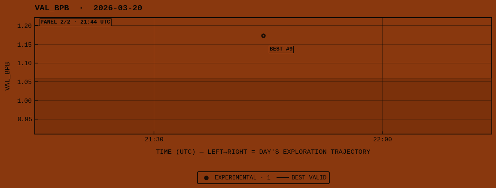

DAILY RESEARCH REPORTBACK TO MASTER SHEET2026-03-20DAILY RESEARCH REPORTBACK TO MASTER SHEET2026-03-20
DAILY RESEARCH REPORTBACK TO MASTER SHEET2026-03-20DAILY RESEARCH REPORTBACK TO MASTER SHEET2026-03-20- **2026-03-20** (formerly missing) — now renders 9 test rows, headline `val_bpb`. Row dates and source records check out via `render_day.best_date`. (All 9 rows are `commit_only_metric` warnings; see Suspect Rows.)
| 2026-03-20 | 9 | 9 |
- **date:** 2026-03-20
- **exact evidence:** SQLite `metrics_json` shows `{"val_bpb": 1.1428, "val_bpb_source": "commit_message"}`. `audit_daily_accuracy.is_commit_only` returned True (only sources for the row are `git_commit` rows). `render_day.best_date(rec) == "2026-03-20"` matches the page; `mtime_iso = 2026-03-21T00:04:49Z` is correctly converted to local CDT 2026-03-20.{
"date": "2026-03-20",
"fatal": 0,
"headline_metric": "val_bpb",
"raw_records": 174,
"render_records": 84,
"test_rows": 9,
"warnings": 9
}

| VAL_BPB SPREAD | n | min | median | max | download |
|---|---|---|---|---|---|
| COMPACT TRANSFORMER RECIPE | 5 | 1.1686 | 1.1725 | 1.1877 | — |
| PROGRESSIVE MLP AND FRACTAL CADENCE TESTS | 2 | 1.2373 | 1.2406 | 1.2438 | — |
| MIXED-PRECISION QUANTIZATION VARIANT | 1 | 1.1428 | 1.1428 | 1.1428 | — |
| STATE-SPACE TTT VARIANT | 1 | 1.1313 | 1.1313 | 1.1313 | — |
| ALL VALID | 9 | 1.1313 | 1.1725 | 1.2438 | — |
| # | TIME | HW | ABLATION | VAL_BPB | STATUS | Δ % | OPEN |
|---|---|---|---|---|---|---|---|
| 1 | 00:04 | — | Add int5-MLP mixed quant, zstd compression, magnitude pruning, and seq ramp (×2) | 1.1428 | OK | — | details |
| 3 | 01:48 | — | Record V2 results: 1.1877 BPB but 20.7MB artifact (4.7MB over limit) (×2) | 1.1877 | OK | — | details |
| 4 | 07:09 | — | Record compact transformer recipe v1 results (1.1725 BPB, 15.58MB) + bump MLP… | 1.1725 | OK | — | details |
| 5 | 07:33 | — | Record compact transformer recipe v2 results: 1.1686 BPB but 16.42MB (over li… | 1.1686 | OK | — | details |
| 6 | 07:49 | — | The compact transformer recipe Recipe — 1.1725 BPB, 15.58MB (×2) | 1.1725 | OK | — | details |
| 8 | 08:40 | — | Record fractal cadence test cadence test progressive results: 1.2438 BPB, 908… | 1.2438 | OK | — | details |
| 9 | 21:44 | — | Add multi-seed validation script for compact transformer recipe Recipe (×2) | 1.1725 | OK | — | details |
| # | TIME | HW | ABLATION | VAL_BPB | STATUS | Δ % | OPEN |
|---|---|---|---|---|---|---|---|
| 2 | 01:31 | — | Upgrade TTT: SGD 3 epochs with momentum, freeze first 2 blocks (×2) | 1.1313 | OK | — | details |
| 7 | 08:05 | — | Record fractal cadence test cadence test breathing results: 1.2373 BPB, too s… | 1.2373 | OK | — | details |